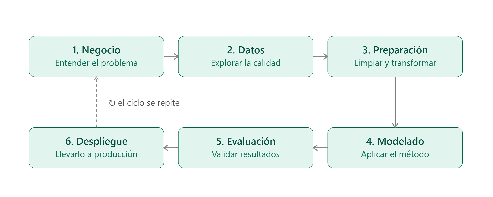
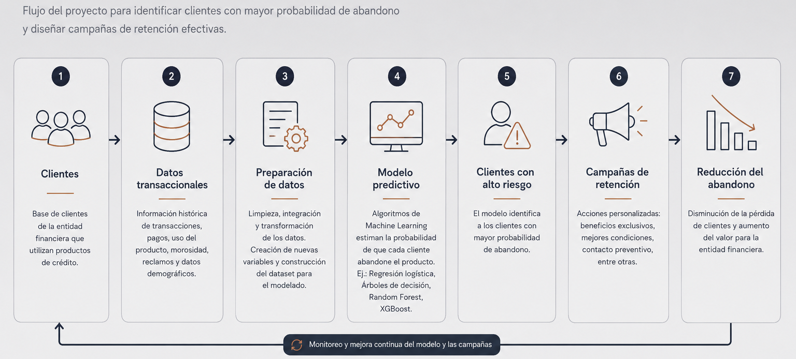

Introducción
Al iniciar un proyecto de ciencia de datos, la atención suele centrarse en los algoritmos y modelos de Machine Learning, ya que representan uno de los componentes más visibles de esta disciplina.
Sin embargo, centrar el proyecto exclusivamente en esta etapa puede conducir a decisiones poco fundamentadas. Antes de construir un modelo, es imprescindible comprender el problema de negocio, analizar la calidad de los datos y definir con claridad el objetivo del proyecto. Aunque el modelo es la parte más visible de una solución de ciencia de datos, rara vez constituye la causa principal del éxito o del fracaso de un proyecto.
Con el objetivo de proporcionar un proceso estructurado para el desarrollo de proyectos de minería de datos, en 1996 fue presentada la metodología “CRISP-DM” (Cross-Industry Standard Process for Data Mining). Su propósito es guiar el ciclo de vida de un proyecto, desde la comprensión del problema de negocio y los datos hasta el despliegue de una solución que genere valor para la organización.
¿Por qué sigue siendo relevante la metodología CRISP-DM?
Una revisión sistemática de la literatura publicada en 2021 por Schröer, Kruse y Marx Gómez analizó investigaciones indexadas en IEEE Xplore, ACM Digital Library y ScienceDirect. Los autores concluyen que, más de dos décadas después de su creación, CRISP-DM continúa siendo el modelo de proceso predominante en proyectos de minería y ciencia de datos, aunque identifican como una limitación frecuente la escasa atención que recibe la fase de despliegue (Deployment) en muchas implementaciones. (Schröer, C., Kruse, F., & Marx Gómez, J. (2021). A Systematic Literature Review on Applying CRISP-DM Process Model. Procedia Computer Science, 181, 526–534.)
Esto se explica por varias razones:
- Enfoque en el negocio: Toda iniciativa comienza comprendiendo el problema que se pretende resolver antes de analizar los datos o seleccionar algoritmos.
- Proceso iterativo: Las fases pueden recorrerse varias veces conforme se obtiene nueva información sobre el problema o los datos.
- Comunicación entre negocio y tecnología:Facilita la comunicación entre analistas, científicos de datos y responsables del negocio.
- Adaptabilidad:La metodología puede aplicarse utilizando herramientas tradicionales de análisis, plataformas de Big Data o modelos modernos de inteligencia artificial.

La permanencia de CRISP-DM no responde únicamente a razones históricas. Su vigencia se explica porque proporciona una estructura comprensible tanto para perfiles técnicos como para responsables del negocio, permitiendo abordar proyectos de datos de forma organizada, independientemente de las herramientas o tecnologías empleadas.
Caso Práctico: Aplicación de CRISP-DM En Una Entidad financiera
"Un caso de churn aplicado paso a paso"
Supongamos que una entidad financiera observa que un número creciente de clientes deja de utilizar uno de sus productos de crédito. Con el objetivo de reducir esa pérdida y diseñar campañas de retención más efectivas, decide desarrollar un proyecto de ciencia de datos siguiendo la metodología CRISP-DM.

El primer paso consiste en definir el problema de negocio.
La organización busca responder preguntas como:
- ¿Qué se considera un cliente que ha abandonado el producto?
- ¿Cuál es el impacto económico de esa pérdida?
- ¿Qué nivel de precisión necesita el modelo para que sea útil?
El objetivo del proyecto queda definido: identificar a los clientes con mayor probabilidad de abandonar el producto durante los próximos meses para implementar acciones preventivas.
Una vez definido el problema, se identifican las fuentes de información disponibles.
Por ejemplo:
- Historial de transacciones.
- Antigüedad del cliente.
- Frecuencia de uso del producto.
- Pagos realizados.
- Retrasos o morosidad.
- Reclamos registrados.
- Información demográfica.
En esta etapa también se realiza un análisis exploratorio para detectar valores faltantes, registros duplicados, datos atípicos y posibles relaciones entre las variables.
Con los datos ya comprendidos, comienza el proceso de preparación.
Algunas actividades son:
- Eliminar registros duplicados.
- Tratar valores nulos.
- Corregir inconsistencias.
- Integrar información procedente de diferentes sistemas.
- Crear nuevas variables, como el promedio de consumo mensual o el número de días desde la última operación.
El objetivo es construir un conjunto de datos limpio y adecuado para el modelado.
Con la información preparada, se seleccionan uno o varios algoritmos de aprendizaje automático.
Por ejemplo:
- Regresión logística.
- Árboles de decisión.
- Random Forest.
- XGBoost.
Es importante aclarar que "modelar" en CRISP-DM no siempre implica algoritmos de Machine Learning. En proyectos donde el objetivo es más operativo, el "modelo" puede ser simplemente un conjunto de reglas de negocio bien definidas. En este caso se optó por un enfoque de aprendizaje automático porque el problema (predecir abandono de clientes) se presta naturalmente a ello.
Antes de utilizar el modelo, es necesario comprobar si realmente cumple con los objetivos planteados. No basta con obtener una alta precisión; también es importante verificar si las predicciones permiten identificar oportunamente a los clientes en riesgo y si el modelo aporta valor para la toma de decisiones.
Una vez validado el modelo, este se integra al proceso de negocio. Por ejemplo, cada semana el sistema puede generar un listado de clientes con mayor riesgo de abandono para que el área comercial implemente campañas personalizadas de retención, como beneficios exclusivos, mejores condiciones o contacto preventivo.
Asimismo, el desempeño del modelo debe monitorearse de forma periódica para garantizar que sus predicciones continúen siendo confiables conforme cambian los patrones de comportamiento de los clientes.
VENTAJAS DE LA METODOLOGÍA CRISP-DM
La metodología CRISP-DM continúa siendo ampliamente utilizada debido a las ventajas que ofrece durante el desarrollo de proyectos de ciencia de datos.
- Organización del proyecto: proporciona una estructura clara que facilita la planificación y el seguimiento de cada etapa del proyecto.
- Comunicación entre negocio y tecnología: establece un lenguaje común entre los responsables del negocio y los equipos técnicos, favoreciendo una mejor comprensión de los objetivos.
- Reducción de riesgos: al definir el problema y comprender los datos antes del modelado, disminuye la probabilidad de desarrollar soluciones que no respondan a las necesidades de la organización.
- Mejor calidad de los resultados: promueve la validación continua de los datos, los modelos y los objetivos del proyecto, contribuyendo a obtener resultados más confiables.
- Adaptabilidad: puede aplicarse en distintos sectores, como el financiero, sanitario, industrial o comercial, independientemente de las herramientas tecnológicas utilizadas.
LIMITACIONES DE LA METODOLOGÍA CRISP-DM
A pesar de su amplia adopción, CRISP-DM presenta algunas limitaciones cuando se aplica a proyectos modernos de ciencia de datos.
No incorpora prácticas de MLOps: la metodología fue concebida antes de la aparición de los procesos actuales de integración, despliegue y monitoreo continuo de modelos de aprendizaje automático.
No contempla tecnologías recientes: fue desarrollada antes del auge del aprendizaje profundo (Deep Learning) y de la inteligencia artificial generativa, por lo que no aborda de forma explícita los desafíos asociados a estas tecnologías.
Requiere complementarse con otras metodologías: en proyectos actuales suele combinarse con enfoques ágiles, como Scrum, o con prácticas de DevOps y MLOps para adaptarse a ciclos de desarrollo más dinámicos.
Conclusiones
La ciencia de datos no consiste únicamente en desarrollar modelos predictivos. Su verdadero valor reside en comprender un problema, analizar la información disponible y transformar los datos en conocimiento que facilite la toma de decisiones. En este contexto, CRISP-DM continúa siendo una metodología vigente para estructurar proyectos de principio a fin, proporcionando un marco de trabajo que prioriza el entendimiento del negocio, la calidad de los datos y la obtención de resultados útiles para las organizaciones.
Aunque el ecosistema tecnológico ha evolucionado con la incorporación de metodologías ágiles, MLOps y nuevas técnicas de inteligencia artificial, los principios fundamentales de CRISP-DM mantienen su relevancia. Más que una secuencia rígida de etapas, representa una forma ordenada de abordar problemas complejos y de recordar que la tecnología solo genera valor cuando responde a una necesidad real del negocio.